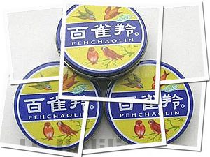

有次出差，一位50多岁的老同事随身携带了这瓶百雀羚，当时没有带手霜，洗完手借了她的百雀羚用，感觉不比国外品牌差。我爸爸大几十年一直是百雀羚忠实用户，我曾给他买过妮维雅冬天用的护肤品，他用了也觉得不错。但最后还是用回百雀羚。认识百雀羚也是从父亲那里开始的，以前是那种扁扁的铁盒子包装，深蓝底色上面有几只小鸟，铁盒打开上面有一层银色锡纸，小心撕开一部分，用完这部分内容再撕另外的部分...里面呈白色膏状，依稀记得很油，因为难吸收，所以容易沾上灰尘和脏东西，但却香味扑鼻。用完的百雀羚盒子会用来装自己的小零钱，家里针线什么的。不经意的再次邂逅，勾起小时侯的很多回忆，上个周末特地到超市里买里两瓶作护手霜用。
如果没记错牌子的话，青春期我常用的是肤美灵洗面奶和3元一瓶的郁美净奶液，白底粉红字体的塑料瓶身，洗完脸涂上奶液，噼里啪啦的用两只手拍打，那之后的脸蛋最美，血液循环，奶液吸收的也好。所以那时侯最喜欢自己刚洗过脸涂完奶液的样子。
80年代后期，学校里开始流行耐克鞋，当时唯一一个款式是皮质白底系带休闲运动鞋，侧面一个大大的红色耐克标志：勾。好象30多元一双吧？接着开始流行防水风衣，穿在身上嚓嚓的响，里面涂了金黄或银白的防水层，据说是进口的涂层，帽子折叠在拉链领子里，肩胛骨那儿有一道透气的纱网。有酒红色、银色、藏青色，我当时有件酒红色的。
我用的第一款香水是桂花香水，忘记牌子了，要扯到过去用的老牌子，还有很多，有人推荐一些国货，绝对精品，量大、安全、好用、便宜到飙泪：
适合干性皮肤的----
洗面奶：大宝美容洗面奶、郁美净鲜奶润白洁面乳、肤美灵（黄色瓶子）
爽肤水：大宝爽肤水、郁美净的爽肤水、千纤草丝瓜水（500ml大概25元左右）、昭贵芦荟凝胶汁、迪赫尔芦荟凝胶汁、相宜本草四倍蚕丝柔肤水
乳液：大宝SOD蜜、宫灯杏仁蜜、芭蕾珍珠蜜、郁美净鲜奶乳液、美加净银耳珍珠滋养蜜
霜：漳州皇后牌片仔癀珍珠膏、芭蕾珍珠膏、相宜本草四倍蚕丝蛋白精华霜、美加净银耳珍珠滋养霜、隆力奇蛇油膏
防晒霜：大宝物理防晒霜SPF20
适合油性皮肤的----
洗面奶：片仔癀洁面乳、肤美灵（绿色瓶子）、郁美净鲜奶润白洁面乳（清凉型）
爽肤水：片仔癀平衡爽肤水、千纤草丝瓜水（500ml大概25元左右）、昭贵芦荟凝胶汁、迪赫尔芦荟凝胶汁
乳液：大宝SOD蜜、宫灯杏仁蜜、芭蕾珍珠蜜、片仔癀保湿滋润蜜
霜：片仔癀珍珠膏、芭蕾珍珠膏
防晒霜：大宝物理防晒蜜SPF18
面膜：相宜本草补水醒肤面膜、相宜本草润白滋养面膜、西藏红花睡眠面膜
卸妆：百雀灵凤凰甘油一号——即可以用来的当卸妆油、也可以用来当爽肤水、也可以用来当乳液、还可以用来当面膜，因为是透明啫喱状，可谓是万能甘油，一点也不油，是芦荟胶那种状态，我都是用它来卸妆或是当爽肤水的。

百雀羚(始于1940)年
上海家化的老牌子，早在1930年，公司前身——富贝康化妆品有限公司成立。1940年富贝康公司隆重推出国内首创 的香脂类产品--“百雀羚”香脂(Peh-ChaoLin CREAM)。1978年，随着“凤凰”品牌的诞生，结合世界先进的科技与中国的传统医学，先后开发出风靡市场的凤凰珍珠、凤凰高级胎盘和凤凰活性胎盘等营养系列化妆品。彻底改变了肌肤由单纯的“保护”功能进入全面“护理、滋养”的生活理念，实现了化妆“营养肌肤”的全新革命。公司先后获得了“上海著名商标”及“上海名牌产品”等多项称号。
消费者热赞产品：百雀羚冷霜护肤脂（香脂）"滋润型（轻轻一推就化成液态了，吸收快，不粘腻。过了半小时再照镜子，脸上不仅没有油光，用手摸起来还好光滑）。
百雀龄凡士林润肤霜:号称国产小黄油，能与倩碧黄油媲美。
凤凰甘油一号：经典的国货精品，任何肤质适用，纯正、温和、无刺激绝对不含色素和香料。可全身使用，全面滋润，无需加水，直接涂抹。是论坛JMS大赞的实惠质优的保湿滋润圣品！
23 Responses to “上海品质：百雀羚”
2008-10-20
记得小时候冬天涂的东东就是叫“雪花膏”!
2008-10-20
小时侯还有擦手的护肤品，放在贝壳里~
2008-10-20
“以前是那种扁扁的铁盒子包装，深蓝底色上面有几只小鸟，铁盒打开上面有一层银色锡纸，小心撕开一部分，用完这部分内容再撕另外的部分…里面呈白色膏状，依稀记得很油，因为难吸收，所以容易沾上灰尘和脏东西，但却香味扑鼻。” —写得很真实…谢谢你让我找回某种温暖的回忆.
2008-10-21
朋友推荐这里，说是能够接触到一些南京的人和事，果然是。
2008-10-21
听说，大宝的眼霜非常好，效果比SK吐都好。
2008-10-21
啊哦？真的么？下次买来试试~
2008-10-21
其实我这么大岁数没长皱纹的真实秘诀是:30岁前都是每天用冷水洗脸,然后抹上———百雀羚.呵呵
2008-10-21
哦~你的脸上是没有皱纹哎，好羡慕呀~
2008-10-21
其实大部分的护肤霜主要成分就是凡士林（Vaseline），其它就是带有？的添加剂，如色素、香料、防腐剂、漂白剂等。
2008-10-21
嗯….小时候是用凡士林的.百雀林.还有那个夏士莲最早出过雪花膏的.它的膏体很特别,薄薄的有点亮晶晶.但涂在脸上后很粉粉的….味道很好闻.
2008-10-21
对的，夏士莲最早出的那款雪花膏我也用过，好象有点增白效果吧？
2008-10-21
百雀羚是好东西，小时候冬天就靠它了
2008-10-21
四啊四啊….偶刚才还去GOOGLE搜了那时候的古董级夏士莲的包装呢……现在看着还是好看来!
2008-10-21
哦，我也用过的！！但是是为了攒那个铁盒子。我们小时候流行跳房子，就是百雀灵用完了以后装满砂子来当“bo”的，不记得是不是叫这个名字了……
2008-10-21
哪里的玩法啊？
2008-10-22
http://blog.sina.com.cn/s/blog_4ac38e970100b4lr.html
在网上搜索了一下，这篇博文里写的就差不多是我小时候的事了。。。嘿嘿。。。
2008-10-22
小时侯我应该也玩过飞机房的,不过规则真记不大清楚了:D
2008-10-22
那个桂花香水是不是金芭蕾的啊？之前在网上看到有人卖的。
2008-10-22
雪花膏是啥样的? 只听相声里讲:“我喷你一脸‘雪花膏’”
2008-10-22
我还记得有种半透明的唇油，就做成现在润唇膏的形状，外包装就是一层玻璃纸，很油，但对防皴裂很有效~~擦后也是亮亮的~~：）
2008-10-22
还有蜂花牌洗发水和护发素~
2008-10-22
蜂花牌护发素偶妈现在还用的莱.也还不错.
那个最早海欧牌一大罐一大罐的洗发膏…浅蓝色的.好香好漂亮的颜色………
2008-10-23
飞机房子是不是那个把沙包丢在一个格子里，然后一格一格单腿跳的游戏
Leave A Reply
存档只读，评论已关闭。